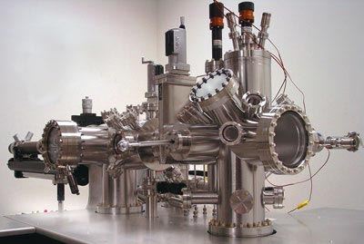
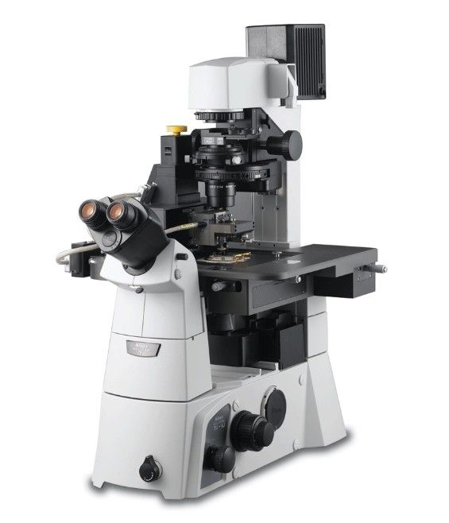
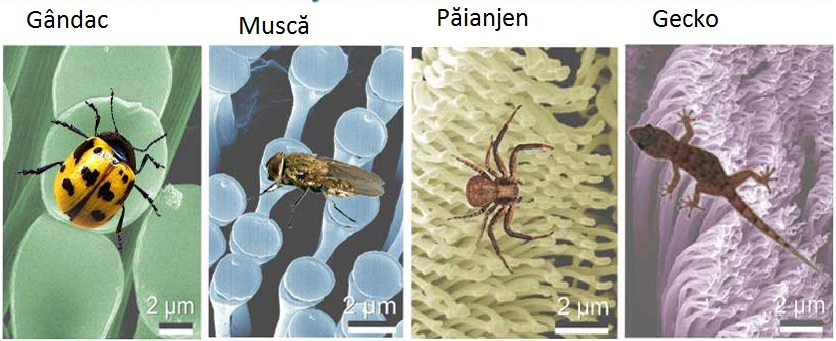

Nanoștiința și nanotehnologia implică abilitatea de a vedea și a controla în mod individual atomii și moleculele. Totul de pe Pământ este făcut din atomi, mâncarea pe care o mâncăm, hainele pe care le purtăm, clădirile, corpurile noastre. Dar ceva atât de mic precum un atom este imposibil de văzut cu ochiul liber.
Microscoapele necesare pentru a vedea lucrurile la o scară atât de mică au fost inventate relativ recent(aprox. 30 de ani în urmă); Odată ce oamenii de știință au avut uneltele potrivite, precum microscopul de scanare tunelară(scanning tunneling microscope (STM) ) și microscopul cu forță atomică(atomic force microscope (AFM)) a început epoca nanotehnologiei.
 Chiar dacă nanoștiința și nanotehnologia modernă sunt destul de noi, materialele la scară nanometrică au fost folosite de secole. Particule de aur și argint de dimensiuni alternate au creat culori în vitraliile bisericilor medievale cu sute de ani în urma. Doar că artiștii de atunci nu știau că procesul pe care l-au folosit pentru a creea aceste opere de artă minunate a condus la modificări în compoziția materialelor pe care le foloseau.Oamenii de știință și inginerii din prezent, găsesc o mare varietate de modalități în a face materialele la scară nanometrică, de a profita de avantajele proprietăților lor îmbunătățite, precum rezistența mai mare, greutate mai mică,controlul sporit al spectrului luminii.
Animalele care se urcă pe pereți și merg pe tavan, au această abilitate datorită elementelor de atașare micro- și nanometrică.Cele mai mari forțe de adeziune sunt întălnite la sopărlele gecko. Un gecko este cel mai greu animal care poate sta" pe tavan cu picioarele deasupra capului. Pe talpa degetelor de la picioare ale unui geko sunt cam un miliard de fire de păr adezive, și au cam 200 de nanometri atât în grosime cât și în lungime. Aceste firișoare de păr îl pun pe gecko în contact fizic direct cu mediul său. Cercetarea modului în care piciorușele insectelor și ale unui gecko au evolut astfel încăt să aibă o asemenea forță de adeziune conduce la dezvoltarea unor sisteme de adeziune artificială inspirate din natură. În imaginea de mai jos puteți observa forma firișoarelor ce permit adeziunea.
